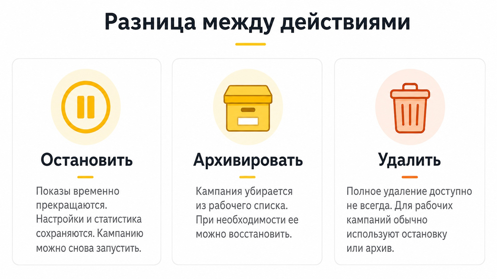

Блог о платном трафике
Как остановить кампанию в Яндекс Директе
Чтобы остановить кампанию в Яндекс Директе, откройте список кампаний, найдите нужную, нажмите на три точки рядом с ее названием и выберите «Остановить». Кампания сохранится вместе со всеми настройками и статистикой, но реклама перестанет участвовать в показах.
Останавливать кампанию удобно, когда реклама временно не нужна: закончился товар, требуется переделать сайт, возникли проблемы с обработкой заявок или вы хотите проверить результаты перед дальнейшим запуском.
Как остановить рекламу в Яндекс Директе
В актуальном интерфейсе порядок действий такой:
- Откройте Яндекс Директ.
- Перейдите в раздел «Кампании».
- Найдите рекламную кампанию, которую хотите отключить.
- Нажмите на три точки рядом с ее названием.
- Выберите действие «Остановить».
Если вы уже находитесь внутри кампании, ее также можно остановить через меню управления кампанией.
После остановки удалять или заново создавать объявления не требуется. Настройки, накопленная статистика и сама структура кампании сохраняются.

Как работает Яндекс Директ: простое объяснение для новичков.
Как остановить сразу несколько кампаний
Если требуется отключить несколько рекламных кампаний одновременно, делать это по одной необязательно.
В списке кампаний:
- Поставьте галочки напротив нужных кампаний.
- Нажмите «Действие».
- Выберите остановку кампаний.
Это полезно, например, если нужно быстро остановить всю рекламу на выходные, на период отсутствия менеджеров или из-за технических проблем на сайте.
Остановятся ли показы сразу
Не стоит рассчитывать, что после нажатия кнопки последний показ обязательно произойдет в ту же секунду.
Изменение статуса кампании может применяться не моментально. Статистика также обновляется с задержкой, поэтому некоторое время после остановки в отчетах могут появляться новые данные по расходам и кликам.
Если реклама расходует большой бюджет и ее требуется срочно отключить, после остановки лучше дополнительно проверить состояние кампании через некоторое время, а не ориентироваться только на факт нажатия кнопки.
Что будет с деньгами после остановки кампании
Остановка кампании прекращает дальнейшие показы, но сама по себе не означает возврат денег.
Если средства находятся на общем счете Яндекс Директа, они остаются в рекламном кабинете и могут использоваться для других или будущих кампаний.
Если вы больше вообще не планируете размещать рекламу и хотите вернуть оставшиеся деньги, это уже отдельная процедура возврата средств.
Яндекс Директ: можно ли вывести деньги и как вернуть остаток со счета.
Как снова запустить остановленную кампанию
Остановленная кампания не удаляется. Когда реклама снова понадобится, ее можно запустить из того же кабинета.
Рядом с названием кампании откройте меню действий и выберите запуск.
Перед повторным запуском я рекомендую проверить хотя бы четыре вещи:
- актуальны ли объявления и цены на сайте;
- работает ли посадочная страница;
- правильно ли настроены цели Яндекс Метрики;
- не требуется ли изменить бюджет или стратегию.
Особенно это актуально, если реклама была выключена на несколько недель или месяцев.
Остановка, архивирование и удаление - в чем разница
Эти действия часто путают.
Остановить кампанию - временно прекратить показы. Настройки и статистика остаются, кампанию можно снова запустить.
Архивировать кампанию - убрать ненужную кампанию из основного рабочего списка. Ее можно впоследствии восстановить из архива.
Удалить кампанию - полностью удалить ее. Уже работавшую кампанию обычно останавливают и при необходимости отправляют в архив.
Поэтому, если задача состоит просто в том, чтобы перестать тратить рекламный бюджет, нужна именно остановка, а не удаление.

Почему кнопки «Остановить» может не быть
В некоторых типах кампаний и режимах интерфейса набор доступных действий может отличаться.
Если кнопки остановки нет, нужно проверить тип кампании и доступные действия в меню управления либо обратиться в поддержку Яндекса.
Можно ли просто поставить дату окончания кампании
Да, если заранее известно, когда реклама должна закончиться.
В параметрах можно задать дату окончания. Для разовой акции или рекламы мероприятия это удобнее, чем заходить в кабинет в последний день и выключать кампанию вручную.
Если же остановить рекламу нужно прямо сейчас, лучше использовать действие «Остановить».
Что я использую на практике
Если кампания может понадобиться снова, я ее просто останавливаю. Удалять или архивировать рабочую кампанию сразу нет смысла: внутри уже накоплена статистика, настроены объявления, аудитории, цели и стратегия.
В архив я отправляю кампании, которые точно больше не нужны и только мешают в общем списке.
Главное после остановки - убедиться, что статус кампании действительно изменился.